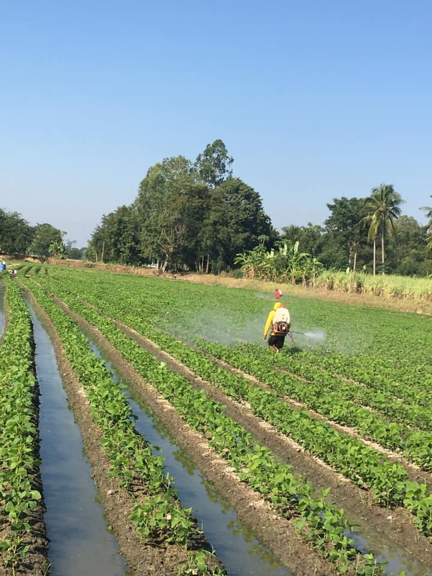
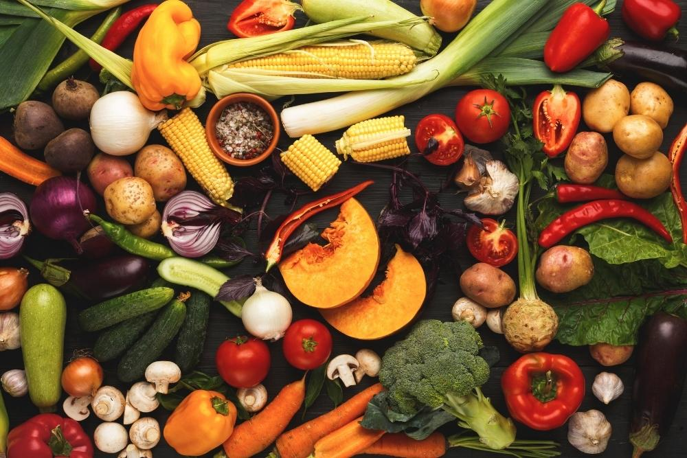
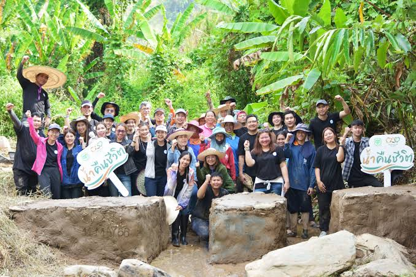

บล็อกความรู้ความยั่งยืนด้านอาหาร
อาหารคุณภาพ ดีต่อเรา และดีต่อโลก
เกล็ดความรู้เล็กๆ ที่จะพาคุณเข้าใจด้านอาหารมากยิ่งขึ้นว่าอาหารที่เรากินส่งผลต่อสิ่งแวดล้อมอย่างไร พร้อมวิธีเลือกกินและลด food waste ที่ทำได้จริงทุกวัน
อ่านบทความล่าสุด สำรวจหัวข้อ

From farm to table
1การผลิต
2การแปรรูป
3การขนส่ง
4การบริโภค
บทความล่าสุด
อ่านจบใน 5 นาที tips and tricks ที่พร้อมใช้งานได้ทันที
Food System: From farm to table
เริ่มจากภาพรวมของการผลิตอาหาร แล้วเจาะลึกรายละเอียดทีละขั้นตอน


เกี่ยวกับบล็อกนี้
อาหารยั่งยืนเป็นเรื่องของทุกคน ทุกบทความอ้างอิงแหล่งข้อมูลที่ตรวจสอบได้ และอธิบายให้เข้าใจง่าย ไม่จำเป็นต้องมีพื้นฐานมาก่อน